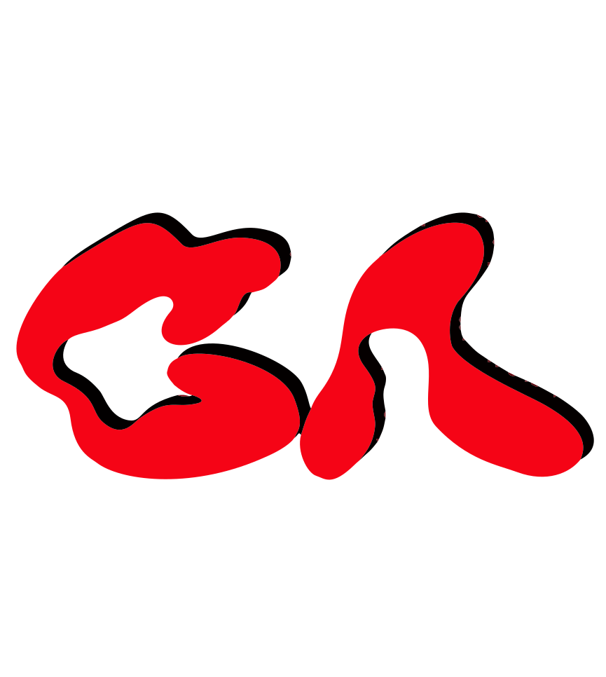

Gabriel Ancelloni
Estudante de ADS (3º Período)
Guarulhos - SP
Foco em Swift (iOS), Prototipagem e Web. Em busca de estágio.
Meus Focos Atuais
iOS Nativo
Swift, UIKit e SwiftUI para apps modernos.
Prototipagem
UX/UI Design utilizando Figma.
Web Responsiva
HTML5, CSS3 e JavaScript.
Lógica
Resolução de algoritmos e estrutura de dados.